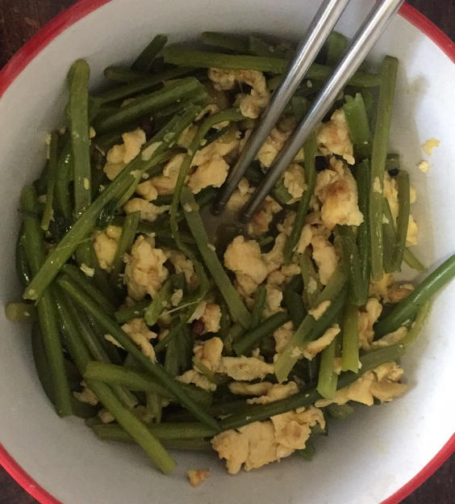

蒜苔炒蛋
2021-10-15 12:24
|
Source
Tags :
egg
food
zh
视频教程见
老東北美食: 只要多做一步，蒜苔又嫩又入味
要点,
蒜苔老的头掐掉, 开水焯一下后放入冷水,从中间撕成两半,切成四公分的段.
滚刀切葱段备用
炒蛋核桃块大小, 三分盐
油热后加葱和少许海鲜酱油.炒几下后加入蒜苔加盐花椒油翻炒
加蛋翻炒几下,略勾芡
注: 没有花椒油,所以我在油温较高时和葱段一起加入少许花椒粒,利用油温爆出花椒香味.

Previous post
Next post
Please enable JavaScript to view the
comments powered by Disqus.
Comments powered by
Disqus